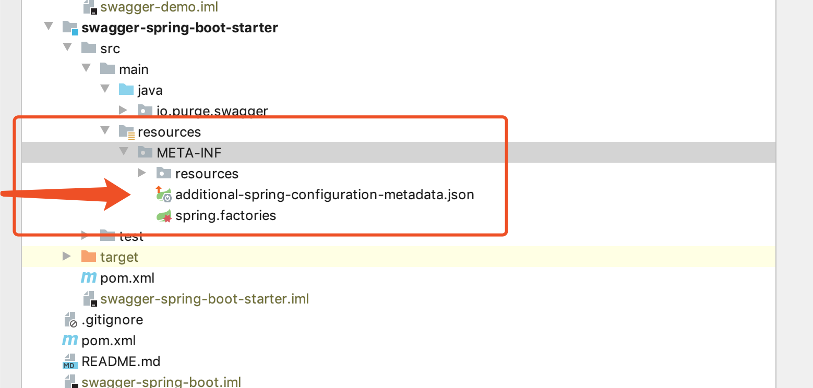
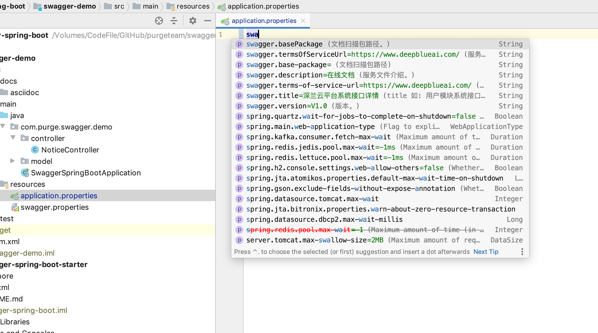

additional-spring-configuration-metadata.json、spring-configuration-metadata.json在springboot-starter官方项目或第三方starter项目中随处可见，那它起的作用是什么？让我们一起探讨一下。
官方文章
官方一篇文章很详细讲解了Configuration Metadata的作用。
有兴趣的小伙伴可以查看下(配置元数据)。
Configuration Metadata
Appendix B. Configuration Metadata
Spring Boot jars include metadata files that provide details of all supported configuration properties. The files are designed to let IDE developers offer contextual help and “code completion” as users are working with application.properties or application.yml files.
The majority of the metadata file is generated automatically at compile time by processing all items annotated with @ConfigurationProperties. However, it is possible to write part of the metadata manually for corner cases or more advanced use cases.简介说明配置additional-spring-configuration-metadata.json文件后，在开发人员的IDE工具使用个人编写的配置读取很有效的在application.properties或application.yml文件下完成提示。
配置元数据文件位于jar下面。 META-INF/spring-configuration-metadata.json它们使用简单的JSON格式，其中的项目分类在“groups”或“properties”下，其他值提示分类在“hints”下，如下例所示：
{"groups": [
{
"name": "server",
"type": "org.springframework.boot.autoconfigure.web.ServerProperties",
"sourceType": "org.springframework.boot.autoconfigure.web.ServerProperties"
}
...
],"properties": [
{
"name": "server.port",
"type": "java.lang.Integer",
"sourceType": "org.springframework.boot.autoconfigure.web.ServerProperties"
}
...
],"hints": [
{
"name": "spring.jpa.hibernate.ddl-auto",
"values": [
{
"value": "none",
"description": "Disable DDL handling."
},
{
"value": "validate",
"description": "Validate the schema, make no changes to the database."
}
]
}
]}properties提示编写当然了我们需要编写
META-INF/additional-spring-configuration-metadata.json进行拓展。
下面简单创建一个starter使用additional-spring-configuration-metadata.json进行提示。
在resources/META-INF目录下创建additional-spring-configuration-metadata.json

内容大致如下:
{"properties": [
{
"name": "swagger.basePackage",
"type": "java.lang.String",
"description": "文档扫描包路径。"
},
{
"name": "swagger.title",
"type": "java.lang.String",
"defaultValue": "平台系统接口详情",
"description": "title 如: 用户模块系统接口详情。"
},
{
"name": "swagger.description",
"type": "java.lang.String",
"defaultValue": "在线文档",
"description": "服务文件介绍。"
},
{
"name": "swagger.termsOfServiceUrl",
"type": "java.lang.String",
"defaultValue": "https://www.test.com/",
"description": "服务条款网址。"
},
{
"name": "swagger.version",
"type": "java.lang.String",
"defaultValue": "V1.0",
"description": "版本。"
}
]}
大家参考下面properties表格进行配置上的理解。
| 名称 | 类型 | 目的 |
|---|---|---|
| name | String | 属性的全名。名称采用小写的周期分隔形式(例如server.address)。此属性是强制性的。 |
| type | String | 属性的数据类型的完整签名（例如java.lang.String），但也是完整的泛型类型（例如java.util.Map<java.util.String,acme.MyEnum>）。您可以使用此属性来指导用户可以输入的值的类型。为了保持一致性，通过使用其包装对应项（例如，boolean变为java.lang.Boolean）来指定基元的类型。请注意，此类可能是一个复杂类型，它从Stringas绑定的值转换而来。如果类型未知，则可以省略。 |
| description | String | 可以向用户显示的组的简短描述。如果没有可用的描述，则可以省略。建议描述为简短段落，第一行提供简明摘要。描述中的最后一行应以句点（.）结尾。 |
| sourceType | String | 贡献此属性的源的类名称。例如，如果属性来自带注释的类@ConfigurationProperties，则此属性将包含该类的完全限定名称。如果源类型未知，则可以省略。 |
| defaultValue | Object | 默认值，如果未指定属性，则使用该值。如果属性的类型是数组，则它可以是值数组。如果默认值未知，则可以省略。 |
deprecation每个properties元素的属性中包含的JSON对象可以包含以下属性：
| 名称 | 类型 | 目的 |
|---|---|---|
| level | String | 弃用级别，可以是warning（默认）或error。当属性具有warning弃用级别时，它仍应绑定在环境中。但是，当它具有error弃用级别时，该属性不再受管理且不受约束。 |
| reason | String | 该属性被弃用的原因的简短描述。如果没有可用的原因，可以省略。建议描述为简短段落，第一行提供简明摘要。描述中的最后一行应以句点（.）结尾。 |
| replacement | String | 替换此不推荐使用的属性的属性的全名。如果此属性没有替换，则可以省略。 |
对应的@ConfigurationProperties类如下:
@Data
@ConfigurationProperties(SwaggerProperties.PREFIX)
public class SwaggerProperties {
public static final String PREFIX = "swagger";
/**
* 文档扫描包路径
*/
private String basePackage = "";
/**
* title 如: 用户模块系统接口详情
*/
private String title = "平台系统接口详情";
/**
* 服务文件介绍
*/
private String description = "在线文档";
/**
* 服务条款网址
*/
private String termsOfServiceUrl = "https://www.test.com/";
/**
* 版本
*/
private String version = "V1.0";
}现在就可以在application.properties文件里尝试提示。

当然了，这个只是实现了简单的配置提示功能，其他的功能大家可以再次产考(配置元数据)文章进行学习。
示例代码地址: swagger-spring-boot